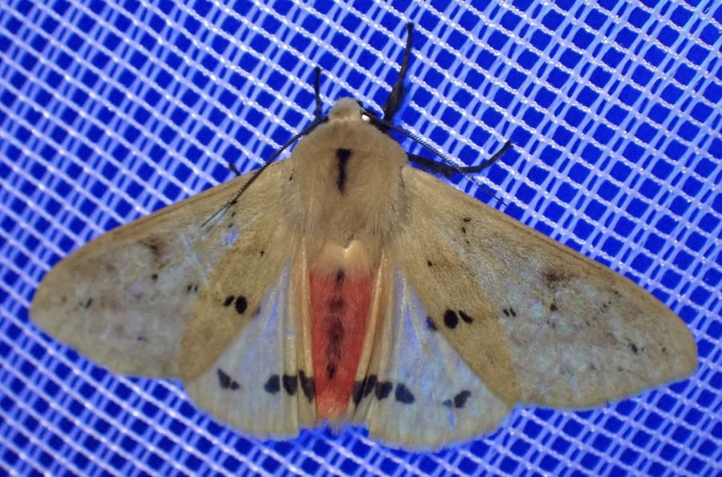

बिहार भुआ पतंगाBihar Hairy Caterpillar Moth
Spilarctia obliqua · Erebidae · INS-0234

- Scientific name वैज्ञानिक नाम
- Spilarctia obliqua (Walker, 1855)
- Family कुल
- Erebidae
- Hindi हिंदी
- बिहार भुआ पतंगा
- Local names स्थानीय नाम
- bihar hairy caterpillar moth, spilarctia obliqua, bihar bhua keeda, bihar hairy caterpillar
- Status here यहाँ की स्थिति
- native
- Movement आवागमन
- Resident, here all year
- Known from कहाँ दर्ज
- Others have published records from the Basti–Ayodhya districts बस्ती–अयोध्या के ज़िलों से दूसरों के प्रकाशित अभिलेख
- IUCN IUCN
- not evaluated
- Review समीक्षा
- not yet reviewed
When to look कब देखें
Present all year. साल भर मौजूद।
Tell it apart from इनसे अलग पहचानें
बिहार भुआ पतंगा / Bihar Hairy Caterpillar Moth
Spilarctia obliqua (Walker, 1855) — Erebidae
बिहार भुआ पतंगा — उत्तर भारत के खेतों में पाया जाने वाला एक मध्यम आकार का कत्थई-पीला पतंगा, जिसका पेट चमकीला लाल-नारंगी और उस पर काले बिंदु होते हैं। इसकी रोएंदार इल्ली को किसान 'भुआ' या 'कमलिया' कहते हैं। यह दलहन, तिलहन और सब्जियों के पत्तों पर एक साथ सैकड़ों की संख्या में हमला करके पूरे खेत के पत्तों को जालीदार बना देती है।
Quick Identification त्वरित पहचान
| Feature | Description |
|---|---|
| Habit | Medium-sized tiger moth with pale straw-buff wings and a scarlet abdomen |
| Forewing | Pale ochreous-buff with an oblique series of small black specks |
| Hindwing | Pale yellow or pinkish-buff with a few fuscous submarginal spots |
| Abdomen | Bright crimson-red or scarlet above with dorsal and lateral rows of black dots |
| Larva | Densely hairy orange-brown caterpillar covered in long bristly setae |
Field tip: Look in mustard, castor, or pulse fields in late monsoon and autumn for skeletonised leaves crowded with gregarious orange-brown hairy caterpillars.
हिंदी — कैसे पहचानें: हल्के पीले पंख जिन पर काली बिंदियों की तिरछी कतार होती है, चमकीला लाल पेट, और खेतों में बहुत रोएंदार भुआ इल्लियों का झुंड।
Morphology आकारिकी
Adult description: Head and thorax pale buff to brownish-ochreous; palpi crimson with black tips; antennae bipectinate in males, serrate in females. Forewing pale ochraceous-buff to straw-yellow, marked with an oblique line of small black spots extending from the apex towards the inner margin, and scattered fine black specks along the veins. Hindwing pale straw, often washed with a warm crimson or pinkish flush towards the inner margin, bearing a discal spot and two or three fuscous submarginal spots.
Abdomen: Conspicuously crimson-red or scarlet dorsally, adorned with a central row of black spots and a lateral row of black specks along each side; ventral surface pale ochreous.
Larval morphology: Full-grown larva is densely clothed in long stiff yellowish-orange or reddish-brown hairs springing from black verrucae, with both ends often darker than the middle.
हिंदी: पंख हल्के भूरे-पीले और पेट चटक लाल होता है जिस पर काले बिंदु होते हैं। इल्ली घने लाल-भूरे रोओं से ढकी होती है।
Behaviour & Ecology व्यवहार और पारिस्थितिकी
Spilarctia obliqua is nocturnal. Adults rest during daylight on the undersides of leaves or in crop stubble, flying actively after dark and being readily attracted to light traps.
Mating occurs at night, after which females lay masses of several hundred pale green spherical eggs on the undersides of host leaves. Newly hatched larvae are strongly gregarious, feeding side-by-side in dense clusters and skeletonising the leaf surface by eating only the green parenchyma.
Older caterpillars disperse across the crop canopy and become solitary, consuming entire leaves, petioles, and growing tips. When disturbed, the caterpillar curls into a tight ring and drops to the ground, relying on its dense bristly setae to deter vertebrate predators.
हिंदी: यह पतंगा रात में रोशनी पर आता है। मादा पत्तों के नीचे सैकड़ों अंडे देती है। छोटे बच्चे झुंड बनाकर पत्ते को जालीदार बना देते हैं। छेड़े जाने पर इल्ली गोल घेरा बनाकर गिर जाती है।
Life Cycle / Phenology जीवन चक्र
| Season / Month | Stage & Activity |
|---|---|
| March–April (Spring) | Overwintering pupae yield early adults that lay eggs on spring fodder |
| May–July (Summer/Monsoon) | Rapid development through summer crops like moong and sesbania |
| August–October (Peak) | Maximum damage across sesame, castor, mustard, and soybean |
| November–December | Mature larvae burrow into soil or crop mulch to form hairy cocoons |
| January–February (Winter) | Overwintering as dormant pupae in the soil until spring warmth |
Under northern subtropical plain temperatures, the life cycle occupies four to six weeks during warm weather, enabling three to four overlapping generations annually.
हिंदी: बसंत से शुरू होकर यह पतंगा साल भर में 3 से 4 पीढ़ियां पैदा करता है। अगस्त से अक्टूबर में खरीफ फसलों पर इसका सबसे ज्यादा प्रकोप होता है। जाड़ों में यह जमीन में प्यूपा बनकर सो जाता है।
Host Plants or Prey आहार
- Agricultural Field Crops: Highly polyphagous pest on dhaincha, Castor (Ricinus communis), Indian Mustard (Brassica juncea), Brinjal (Solanum melongena), and Paddy (Oryza sativa).
- Pulses and Oilseeds: Feeds on soybean, sunflower, black gram (urad), green gram (moong), and pigeon pea.
- Weed Hosts: Forages on wild weeds like Xanthium strumarium, Cannabis sativa, and amaranth.
हिंदी: इसकी इल्ली ढैंचा, अरंडी, सरसों, बैंगन, धान, मूंग, उड़द और सूरजमुखी के पत्तों को खा जाती है। यह लगभग हर तरह की फसल को नुकसान पहुंचा सकती है।
Predators / Natural Enemies शत्रु
- Parasitoid Wasps: Apanteles (Braconidae) wasps parasitize young caterpillars; tachinid flies attack mature larvae.
- Predatory Invertebrates: Ground beetles (Anthia), reduviid bugs, and praying mantids feed on caterpillars.
- Birds: Common Myna, House Sparrow, and Black Drongo follow ploughing to consume exposed pupae and larvae.
हिंदी: जुताई के समय मैना, गौरैया और भुजंगे जमीन से निकलने वाले प्यूपा को खा जाते हैं। छोटी परजीवी ततैये इसकी इल्लियों में अंडे देकर उन्हें नष्ट करती हैं।
Agricultural / Human Relevance कृषि प्रासंगिकता
- Major agricultural pest: The Bihar hairy caterpillar is one of the most destructive polyphagous defoliators across the Indo-Gangetic plain, capable of completely defoliating pulse and oilseed fields.
- Integrated pest management: Farmers collect and destroy egg masses and gregarious young colonies on individual leaves; light traps monitor adult flights; deep summer ploughing exposes pupae to sun and predatory birds.
- Urticating hazard: The bristly hairs cause mechanical irritation, rash, and swelling if handled with bare hands.
हिंदी: यह गंगा के मैदानों में तिलहन और दलहन का एक कुख्यात हानिकारक कीट है जो पूरे खेत को उजाड़ सकता है। किसान अंडे वाले पत्तों को तोड़कर नष्ट करते हैं और गहरी जुताई करके प्यूपा को मारते हैं।
Expected Locally स्थानीय रूप से अपेक्षित
Not a field record. Written from published accounts for eastern Uttar Pradesh. No confirmed local sighting yet — if you have seen it, that is what the atlas needs.
अभी तक स्थानीय पुष्टि नहीं। यह विवरण प्रकाशित स्रोतों से है, किसी अवलोकन से नहीं।
Expected throughout the agricultural plains, pulse tracts, mustard fields, and rural floodplains of Basti, Ayodhya, and Sant Kabir Nagar wherever oilseed and legume crops are grown. GBIF holds published records from these districts. A first local record would be a photograph of an adult showing the red abdomen and oblique speck line, or an egg mass on foliage, submitted through the About page.
Distribution वितरण
Global range: Widespread across South Asia, from Pakistan and India through Nepal, Bangladesh, and Myanmar to parts of Southeast Asia.
In India: Abundantly recorded across the northern plains, the Gangetic alluvium, Bihar, West Bengal, Assam, and Central India (Hampson 1894).
In Uttar Pradesh: Distributed throughout all agricultural districts across the state.
In Basti district / eastern UP: Expected in every rural block where pulses, mustard, and vegetables are planted.
हिंदी: यह पतंगा पूरे भारत, पाकिस्तान, नेपाल और बांग्लादेश के खेती वाले मैदानों में बहुत अधिक संख्या में पाया जाता है।
Research Questions शोध प्रश्न
- What is the primary overwintering survival rate of pupae in local alluvial clay soils? / स्थानीय दोमट और मटियार मिट्टी में इसके प्यूपा जाड़ों में कितने प्रतिशत जीवित बचते हैं?
- Which pulse crop suffers the most severe yield loss during autumn outbreaks in Basti? / बस्ती में खरीफ के मौसम में दलहन की किस फसल को इससे सबसे ज्यादा नुकसान पहुंचता है?
- How effective are community light traps in suppressing initial adult mating flights? / रात में रोशनी के फंदे लगाने से वयस्क पतंगों की संख्या को कितना कम किया जा सकता है?
- What percentage of larval egg masses are naturally parasitized by trichogrammatid wasps? / इसके अंडों पर प्राकृतिक रूप से परजीवी ततैया का कितना असर होता है?
- Can village children distinguish early gregarious feeding damage from other garden pests? / क्या ग्रामीण बच्चे पत्तों पर शुरुआती जालीदार बनावट देखकर पहचान सकते हैं कि यह भुआ का हमला है?
Similar Species मिलती-जुलती प्रजातियाँ
| Species | How to tell apart | हिंदी |
|---|---|---|
| Castor Woolly Bear Moth (Olepa ricini) | Forewings grey-brown with rounded dark spots; hindwings red with dark spots | पंखों पर गोल कत्थई धब्बे, पिछले पंख लाल |
| Bordered Tussock Moth (Lymantria marginata) | Whitish wings with dark wavy borders; male antennae feathery; abdomen grey-buff | पंख सफेद-मटमैले, नर के एंटीना कंघी जैसे |
| Tropical Tiger Moth (Asota caricae) | Forewings grey-brown with a distinct central white spot; abdomen yellow-banded | पंखों पर सफेद बिंदु, पेट पर पीली-काली पट्टियां |
Field rule: A straw-buff moth with an oblique row of fine black dots across the forewing and a brilliant crimson-red abdomen spotted with black identifies Spilarctia obliqua.
Taxonomy & Classification वर्गीकरण
Original description. Described by Francis Walker in 1855 as Spilosoma obliqua in List of the Specimens of Lepidopterous Insects in the Collection of the British Museum, part 3.
Subspecies. Monotypic across northern India; recognized without formal subspecies divisions.
Family and order placement. Placed in the family Erebidae, subfamily Arctiinae (tiger moths), tribe Arctiini, in the order Lepidoptera.
IUCN status rationale. Not evaluated on the IUCN Red List; an abundant and widespread agricultural species with immense continental populations.
हिंदी: फ्रांसिस वॉकर ने 1855 में इसका पहला वैज्ञानिक विवरण 'स्पाइलोसोमा ऑब्लिक्वा' नाम से दिया था। यह इरेबिडी कुल और आर्कटिनी उपकुल का सदस्य है।
Photo Gallery फोटो गैलरी
No photos yet — add field photos to media/species/bihar_hairy_caterpillar_moth/ and run node scripts/sync_photos.js.
Photos needed आवश्यक फोटो
- [ ] Adult resting flat showing straw wings and red abdomen (बैठा हुआ वयस्क पतंगा)
- [ ] Gregarious young caterpillars skeletonising leaf (पत्ते को जालीदार बनाती छोटी इल्लियों का झुंड)
- [ ] Mature hairy caterpillar on crop stem (फसल के तने पर बड़ी रोएंदार भुआ इल्ली)
References संदर्भ
- Walker, F. (1855). List of the Specimens of Lepidopterous Insects in the Collection of the British Museum, part 3. British Museum, London.
- Hampson, G.F. (1894). The Fauna of British India, including Ceylon and Burma: Moths, vol. 2, p. 158. Taylor and Francis, London.
- Hampson, G.F. (1901). Catalogue of the Arctiadae (Arctianae) and Agaristidae in the Collection of the British Museum, vol. 3, p. 289. British Museum, London.
- CABI (2022). Spilarctia obliqua (common hairy caterpillar). CABI Compendium. CAB International, Wallingford. doi:10.1079/cabicompendium.50995
- Robinson, G.S., Ackery, P.R., Kitching, I.J., Beccaloni, G.W. & Hernández, L.M. (2001). Hostplants of the Moth and Butterfly Caterpillars of the Oriental Region. Natural History Museum, London.
- GBIF Occurrence Data — Spilarctia obliqua (Walker, 1855), India (2025).
Source file: species/fauna/insects/bihar_hairy_caterpillar_moth.md